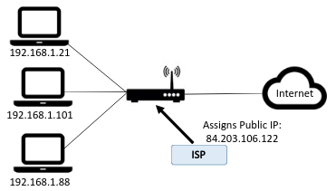

Networking and the SenseHat
Network · SenseHat
Objectives
- Investigate network configuration on your machine.
- Write a program and execute it on the SenseHat Emulator.
- Send a message on the web.
Prerequisites
- Completed preparatory lab
The Local Network
Introduction
You will now investigate your local network setup. From a networking perspective, it's a good idea to know:
- how you connect to the local network.
- the IP address you have on the internet.
- the network interfaces you have on your machine.
It may be useful to be able to investigate these details if you need to troubleshoot connectivity and network issues in later labs.
Your Local Network
You are likely to be using one of the following systems to connect to the internet:
- DSL/Fiber wired connection with a home router using an Internet Service Provider (e.g. Eir)
- Mobile Broadband router (sometimes known as a 'hotspot') provided by a mobile network provider (e.g. 3).
- 3rd party wireless provider or general apartment complex wireless connection.
Most solutions will require that you have some form of physical device that can route network traffic from your home network and the internet (usually called Router). You can then connect your devices to the router and you're up and running! Every device that you connect must have a suitable network interface.
Your IP address
An Internet Protocol address (IP address) is an identifying number for devices connected to a network. An IP address allows a device to communicate with other devices over an IP-based network, for example the internet.
Open a terminal window on your machine and, at the command prompt, enter the following command for your Operating System:
Windows:
ipconfig- Linux:
ifconfig - OS X:
ifconfig
You should see a summary of the network interfaces on your machine:

Your network set up will look different depending on various factors such as how you connect (wired, wifi) and how many network interfaces you have on your machine. More than likely, you should have at least 2 at the moment (assuming you completed the on-site lab); Ethernet(wired) and/or Wireless LAN (WiFi).
So how do you know which interface you're currently using to connect to the internet? Generally, your Operating System will select the connected interface with the highest speed. If you're 'wired' (usually 100mbit per second or 1000mbit per second) then that's the interface that will be used, otherwise it will fall back to wireless. You can usually deduce this from the ipconfig output. To know for sure, you can have a look at the routing table on your machine. The routing table shows what interfaces network traffic will be sent out on.
- On Windows,Linux and OS X, use the
netstat –nrcommand to see a summary of the routing information. - Find the IPv4 Route table. You will see one entry indicated as default(or with a destination of 0.0.0.0). That's the interface used to connect to the internet.

Exercise
Using the above commands, answer the following questions:
- How many interfaces are listed on your machine?
- What is the ip address of the interface are you using?
- If not already, start up the virtual machine from the previous lab and run the ifconfig/ipconfig on your host machine again. Is there a new interface now? If so, why do you think it's there?
PING
PING(Packet INternet Groper) sends ECHO_REQUEST packets to the IP address you specify. It’s a handy way to see whether your machine can communicate with the Internet or another machine. However many machines are configured not to respond to pings so, if you don't get a response, it doesn't mean the machine is not connected and available for communication.
So you've all connected to the Wifi with your host machines So you should be able to ping each others host machines from your machine. Try the following:
- Determine the ip address of your host machine on the local network.
- Ask your neighbour (or help them) what their IP address is.
- Ping them by typing ping followed by their IP address. All things going well you should see a successful response.
You can also use Ping to check if you can connect to the internet. Type ping google.ie to see if you can get a response from Google. This time, you should see something like this:
Notice that you used a domain name this time. In this case, your machine would have used Domain Name System (DNS) to get the IP address for a "google.ie". As you can see, in this example the IP address is 209.85.203.94 and we got a successful reply so the virtual machine, pc0, is connected to the internet!
We'll cover more about DNS in future coursework.
Tracepath
Tracepath is a network troubleshooting utility which shows the number of "hops" taken by network "packets" to reach a destination and also determine the travelling path through the network. In the terminal session, type tracepath www.tssg.ie to see the path though the network to the tssg web site. You should see responses similar to the following:

- Also, do a tracepath using a neighbours IP address. Does it complete successfully and how many hops does it take?
Private and Public IP addresses

You now know the IP address of your computer on your local area network(LAN). However, this is probably a "local" IP address that is just used in your LAN. It is not the IP address that the rest of the internet uses to interact with your computer. Your internet service provider will assign a single public IP address that is used by your computer (and all other devices on your LAN) and your router can translate traffic between local and public IP addresses. There are several web services that can be used to find out your public IP address.
- In a browser, go to Google and search "what is my IP". You’ll see the Public IP address of your computer.

IP addresses are managed by the Internet Assigned Numbers Authority (IANA), which has overall responsibility for the Internet Protocol (IP) address pool. Your public IP address is usually based on a real-world location and can be used to estimate where you are. For example, your IP address can be used to give you weather forecasts for the town you're in or to advertise local services in the area. To see this in action, you can use several web sites that will display your IP address and location.
- In a web browser, go to www.acuweather.com and see the result...
Raspberry Pi Sense HAT Emulator
Try a pi before you buy!
As you know we will be using a Raspberry Pi in the latter part of the module to explore wireless networking and "device-level" connected applications. You will need to buy a Raspberry pi and Sense HAT to complete and assignments and labs. The Sense HAT(Hardware Attached on Top), the multi-purpose add-on board for the Raspberry Pi that contains various sensors and an array of RGB LEDs. IT was also sent into space as part of the Astro Pi project on the International Space Station.
However, we don't need the Pi and Sense Hat to start working with it. A US-based start-up called Trinket with Raspberry Pi have developed a web-based emulator for Sense Hat. The emulator is a useful development tool as it allows you to test, debug and share applications without putting them on an actual device (you will probably use an emulator for your Mobile App Dev module).
Programming the Emulator
The emulator uses a programming language called Python. You have probably not come across Python before but you do have knowledge of programming now and we will use Trinket to "hack" an existing code example. Try the following with Trinket:
- Open the following Sensor Hat template in Trinket: https://trinket.io/python/a242f4535b
- Have a close look at the script and try to deduce what's going to happen when you run it.
- Run the example by clicking the run button.
As you can see, it prints the message across the LEDs. See if you can change the program to:
- print you name instead of "HDip Comp Sci"
- change the colour to red.
Environment Data
The Sense HAT has temperature, pressure and humidity sensors that can sense environment variables. Notice that the emulator has sliders you can move to change these values.
You can use this to test how your code responds to environmental variables. Have a look at the following trinket code that uses the temperature sensor:
Now let use the temperature sensor on the board to make a kind of "smart" thermostat. Check out the following example that uses the temperature sensor: https://trinket.io/library/trinkets/cceba5489f
Run the example and you'll see the temperature printed in the lower console output window. Let's combine modify this simple example to use the temperature to do the following: + If the temperature greater than or equal to 25 degrees celcius print "HOT!" on the Sense Hat, otherwise print "Fine!" in green(i.e if it's below 25)
In the trinket temperature example, replace the code in main.py with the following:
from sense_hat import SenseHat
sense = SenseHat()
sense.clear()
green = (0, 255, 0)
red = (255,0,0)
while True:
temp = sense.get_temperature()
if temp >=25:
sense.show_message("HOT!", text_colour = red)
else:
sense.show_message("Fine!", text_colour = green)
print(temp)Now we are using an environment variable (temperature) in our program to make a decision(i.e. decide if it's hot or not) and visually indicating this using the Sense Hat.
Internet of Things
This is a networking module so now lets stick some networking into the program and connect our emulated device to the internet.
Let's presume this device is part of a network of environment sensors that need to send their data to a central messaging service.
In this example, we will send our data to a "channel" on the Thingspeak platform. We can do this by programmatically sending a HTTP request with an encoded URL. This is similar to what you did in Web Dev with HTML forms except we're doing it programmatically using Python.
Update your program with the following code:
from sense_hat import SenseHat
import urllib.request
import time
sense = SenseHat()
sense.clear()
green = (0, 255, 0)
red = (255,0,0)
#You'll need to update the following statement...
serviceurl = 'https://api.thingspeak.com/update?field1=YOUR_DEVICE_NAME&api_key=USE_YOUR_OWN_OR_GET_IT_IN_CLASS>'
while True:
temp = sense.get_temperature()
url = serviceurl + '&field2='+str(temp)
if temp >=25:
sense.show_message("HOT!", text_colour = red)
else:
sense.show_message("Fine!", text_colour = green)
urllib.request.urlopen(url)
time.sleep(5)
print(temp)Replace the YOUR_DEVICE_NAME with a unique name of your device (I'll leave that up to you) and replace USE_YOUR_OWN_OR_GET_IT_IN_CLASS with the api key given in class.
Want to do more...
Create an account at https://thingspeak.com/ and set up your own channel to receive data from your device.